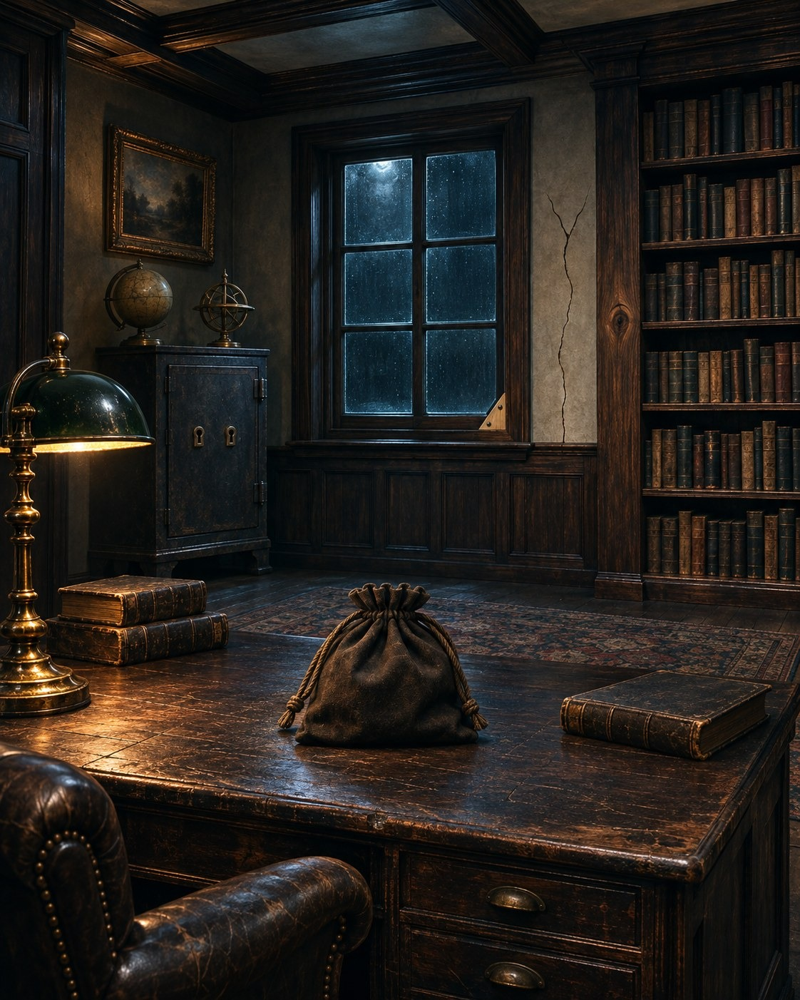
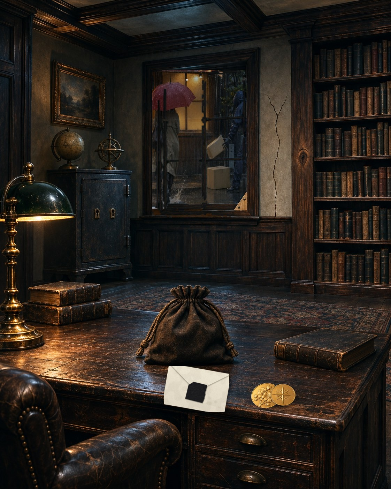
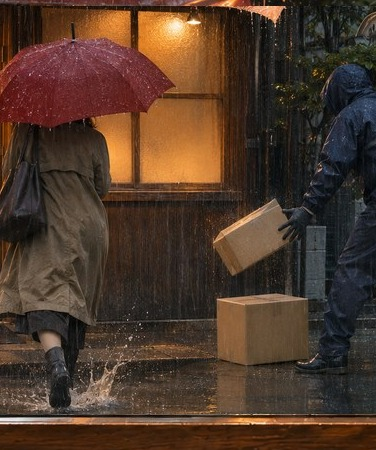
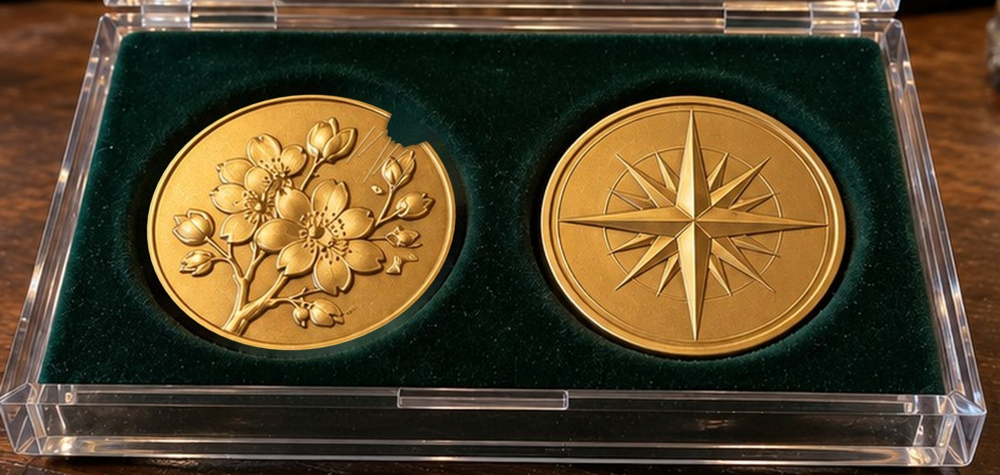
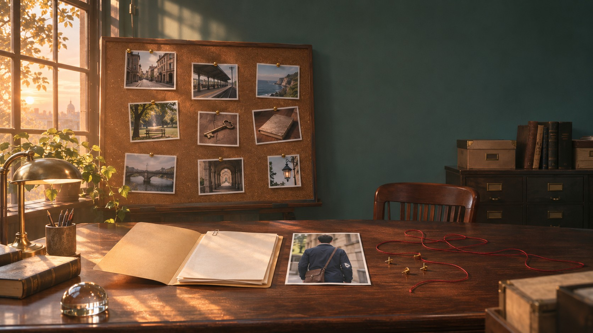

赤い糸の先 ／ 最終話
FILE 000 赤い糸の先
机の前に誰もいない。ただそれだけで、写真はひどく静かに見えた。
水城は未加工の写真と、最終報告の写真を同じ大きさにした。机の縁に短い傷がある。ランプの台座の横に本が積んである。その二つを合わせると、違うのは何が写っているかだった。


作業用データには、未加工の書斎と完成画像の間に、配置された切り抜きが残っていた。瀬尾が人物の表示を外すと、完成画像の右側から男が消えた。さらに窓の表示を外すと、赤い傘と水しぶきが消えた。書斎の窓枠はそのまま残った。

水城は蔵の市の元写真を開いた。右肘の白い布だけでなく、肩紐が背に食い込むところまで重なる。あの朝、肘だけ添付していたら、ここまでは比べられなかっただろう。窓の切り抜きは、木窓の発表資料で二度見た光景と一致した。

机の上の封書は野鳥園のものだった。二枚のメダルは押収品の写真からではなく、収集家への引き渡しを記録した写真から来ている。片方にだけ欠けがある。あの晩、瀬尾が「右は？」と聞いたときとは違う二枚だった。

係長の机で、水城は元の写真と報告書を並べた。係長は書斎の写真を先に見て、それから報告書をめくった。
「この男は、どこにいたと書ける」
「蔵の市の写真には、切り抜きと同じ後ろ姿があります。この書斎にいたという根拠は、この写真にはありません」
「前に出した照合はどうなる」
「残します。三通の封の切り口は、今も合います。メダルの傷も同じです」
水城は二枚のうち、報告書の写真を係長の前へ押した。
「この男がそれを集めたと書いてあるのは、こっちです」
係長は報告書の最後の行まで読んだ。報告は、机の前の男を、一連の事件の指示役だとした。その場面を捏造したものが、現場写真として添えられていた。
翌日、捜査本部は最終報告を撤回した。男を黒幕とした判断を取り消し、個々の事件は元の記録に戻って調べ直す。写真を誰が組み立てたのかは、別の捜査に引き継がれた。
水城は撤回の通知を原本に重ねかけ、手を止めた。以前、受付に来た人が、訂正した名前を指で触ったのを思い出した。原本と通知を別々の袋に入れ、どちらからでも相手の番号が分かるように書いた。封には、朝の日が当たっていた。

係長が出ていったあと、水城は壁のボードに向かった。封書へ伸びる糸と、メダルへ伸びる糸は残した。男の写真と、書斎の写真を結んでいた一本を外す。画鋲を置く音がした。
棚へ箱を戻す直前、瀬尾から内線が鳴った。水城は封緘紙から指を離して、受話器を取った。
完